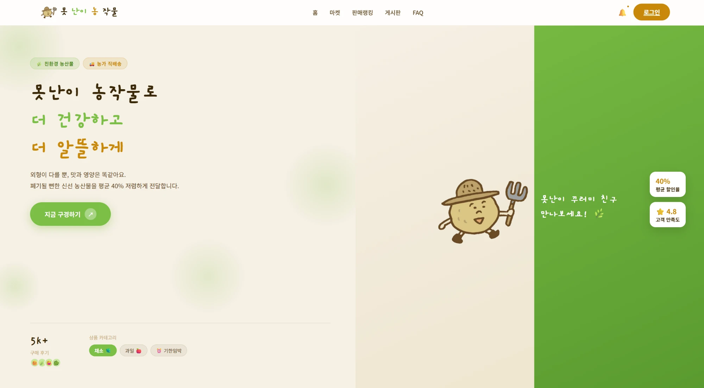
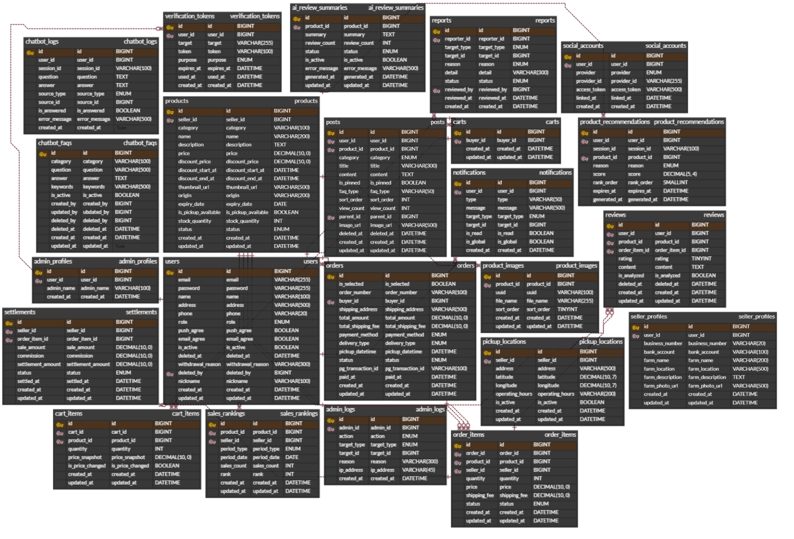

못난이 농산물 마켓플레이스 · 팀장
PotatoChip
못난이 농산물을 거래하는 마켓플레이스입니다. 팀장이자 상품 도메인 담당으로, 상품 등록부터 장바구니까지를 맡았습니다.

프로젝트 소개
상품성이 떨어진다는 이유로 버려지는 못난이 농산물을, 판매자와 구매자가 직접 거래하도록 잇는 마켓플레이스입니다. 대우능력개발원 교육 과정의 팀 프로젝트로 개발했습니다.
내 역할
팀장이자 상품 도메인 오너로, 팀을 이끌면서 상품과 장바구니 도메인을 직접 설계하고 구현했습니다.
- 상품 도메인 상품 CRUD와 판매자 전용 권한, 카테고리·키워드 필터를 설계하고 구현했습니다.
- AI 상품 등록 사진을 올리면 AI가 이미지를 분석해 상품 제목과 설명 초안을 작성해주는 기능을 붙였습니다.
- 장바구니 담은 시점의 가격을 유지하는 가격 스냅샷
CartItem구조를 설계했습니다. 제 구현 범위는 여기까지이고, 주문·결제는 다른 팀원이 이어받았습니다. - 부가 기능 Kakao Map 픽업 위치와 기간별 판매 랭킹 집계를 구현했습니다.
- 팀 리딩 develop·feature 브랜치 전략과 PR 코드 리뷰를 운영하고, 일정과 문서를 총괄했습니다.
시스템 아키텍처
강조된 블록이 제가 맡은 상품·장바구니 도메인입니다. 주문·결제부터는 다른 팀원이 이어받았습니다.
상품 도메인
판매자가 상품을 올리고, 구매자가 원하는 조건으로 찾아 들어오는 구간입니다.
- 판매자 대부분이 농가라 상품 설명을 쓰는 단계에서 등록을 포기하는 경우가 많았습니다. 상품 사진을 올리면 AI가 이미지를 분석해 제목과 상세 설명 초안을 채워주고, 판매자는 확인·수정만 하면 되도록 만들었습니다.
- AI 응답은 초안일 뿐 최종값이 아니므로 그대로 저장하지 않고 등록 폼에 채워 넣어, 판매자가 손을 댄 값이 항상 우선하도록 했습니다.
- 상품 CRUD에 판매자 본인만 수정·삭제할 수 있는 권한 제어를 붙였습니다.
- 못난이 농산물은 종류와 산지로 찾는 경우가 많아, 카테고리와 키워드를 함께 거는 필터를 만들었습니다.
- 직거래 픽업이 많은 서비스라 Kakao Map API를 연동해 상품별 픽업 위치를 지도로 보여줍니다.
- 화면 수가 적고 SEO가 필요해 SPA 대신 Thymeleaf 서버사이드 렌더링을 골랐습니다.
장바구니
장바구니가 상품 테이블의 현재 가격을 그대로 참조하고 있었습니다. 판매자가 가격을 수정하면 사용자가 담을 때 본 금액과 주문 금액이 달라지는 구조였습니다.
CartItem에 담은 시점의 가격을 스냅샷으로 저장하고, 장바구니 요약과 주문 금액을 모두 이 스냅샷 기준으로 계산하도록 바꿨습니다.
판매자가 가격을 바꿔도 이미 담긴 항목의 금액은 유지됩니다. 장바구니에 보이는 금액과 뒤이어 넘어가는 주문 금액이 어긋나지 않습니다.
구현 상세
- 상품 가격을 참조만 하면 변경에 그대로 끌려가므로,
CartItem이 담은 시점의 값을 직접 들고 있게 설계했습니다. - 제가 맡은 범위는 장바구니 요약 금액 계산까지이고, 그 뒤 주문·결제는 스냅샷 값을 그대로 받아 쓰도록 규격을 맞춰 넘겼습니다.
팀 리딩 · 협업
브랜치는 나눴지만 팀원들이 기능이 다 끝날 때까지 PR을 미뤘습니다. 각자 오래 들고 있던 브랜치가 한꺼번에 올라오면서 머지할 때마다 충돌이 대량으로 났고, 엔티티와 공통 레이아웃처럼 여러 명이 같이 건드리는 파일에서 특히 심했습니다. 충돌을 급하게 풀다 다른 팀원의 코드가 덮여 사라지는 일까지 있었습니다.
팀장으로서 PR 단위를 기능 하나 크기로 쪼개고, feature 브랜치는 작업 시작 전과 PR 올리기 전에 develop을 먼저 최신화하도록 규칙을 세웠습니다. 엔티티·공통 화면처럼 충돌이 잦은 파일은 담당자를 정해 변경을 한 사람에게 모으고, 올라온 PR은 그날 안에 리뷰·머지해 브랜치가 오래 묵지 않게 했습니다.
충돌이 머지 시점이 아니라 각자 작업 중에 미리 드러나 해결 비용이 줄었고, 머지 후 기능이 사라지는 사고도 없어졌습니다. 이후 프로젝트에도 같은 협업 방식을 그대로 가져갔습니다.
구현 상세
- 기능 단위로
feature브랜치를 파고,develop에 PR로만 합치도록 규칙을 세웠습니다. - PR 전
develop최신화를 원칙으로 정해, 충돌을 리뷰어가 아니라 작성자가 자기 브랜치에서 풀도록 했습니다. - 공통 파일 변경은 담당자에게 모으고, 5인 팀의 일정과 진행 상황을 문서로 정리해 공유하며 도메인별 담당을 나눴습니다.
데이터베이스 ERD

상품 · 이미지 · 장바구니 · 랭킹 엔티티 관계